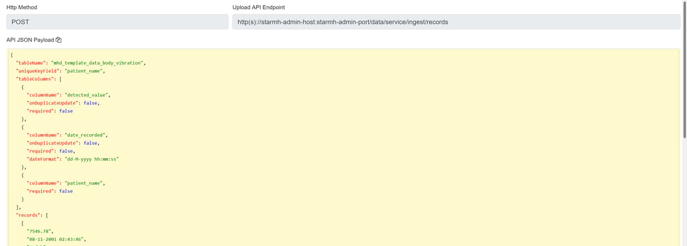

How to ingest data into reporting database used by StarMH dashboard
This blog discusses how data ingestion could be performed using StarMH data ingestion API
Atif Baig
1/15/2024 - 1 min read
Below are the steps to ingest data into StarMH dashboard.
Step 1: Add the desired StarMH table if it does exist already.

Step 2: Configure the data upload preferences for the table in which data has to be ingested.

Step 3: Review the documentation for data ingestion/upload API that is generated based on the table upload preferences.

Step 4: Develop RESTful API client in your favourite language that follows the API documentation generated in step 3.
Step 5: Run the data ingestion process developed in step 4 and review the recent records in StarMH admin application.

That's it. Now your data is ingested in StarMH table and it is ready to be used in the StarMH dashboads.